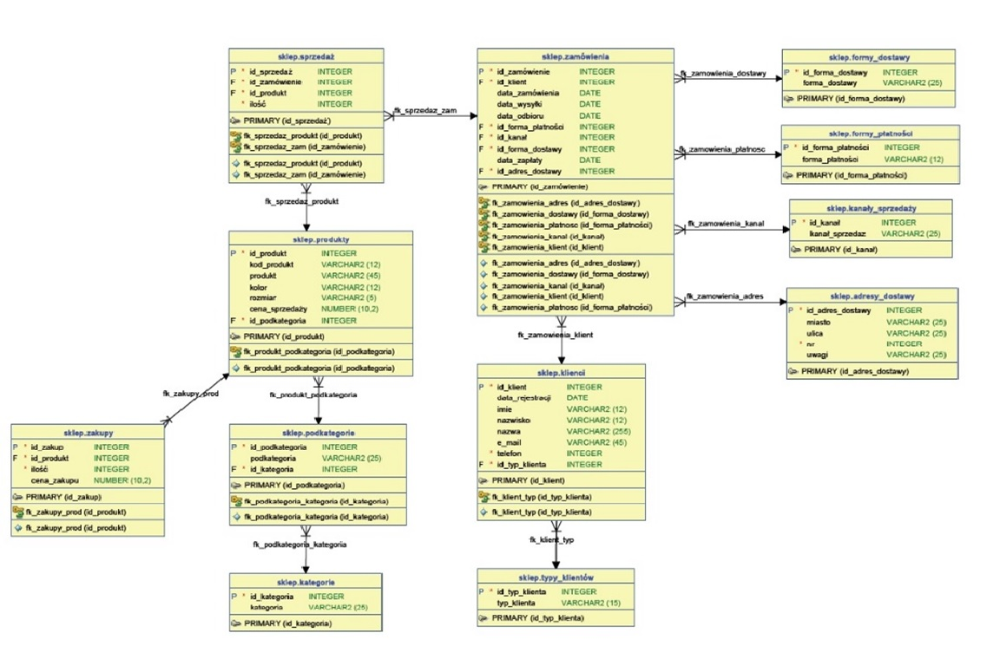

Moje projekty
Na tej stronie znajdują się moje projekty analityczne z wykorzystaniem różnych narzędzi programistycznych.
Projekt 1. Baza danych SQL
Autorski projekt bazy danych wraz z kodem SQL tworzącym bazy danych, wstawiającym fikcyjne dane testowe oraz skrypty analityczne pozwalające na przeprowadzanie pogłębionych analiz informacji zawartych w bazie danych. Projekt zawiera opisy projektów oraz skrypty.
Celem projektu jest stworzenie bazy danych dla sklepu, który prowadzi działalność w zakresie sprzedaży towarów dla mężczyzn tj. odzież, obuwie, bielizna, galanteria skórzana, które nabywa od różnych dostawców tj. hurtowników i producentów. Klientami Firmy są osoby i inne firmy.
Zaprojektowana baza danych obejmuje procesy:- zbieranie zamówień od klientów (w formie on-line);
- sprzedaż towarów dla klientów na podstawie złożonych zamówień i ich wysyłkę do klienta;
- gromadzenie danych o klientach;
- gromadzenie danych o zakupach.
Baza będzie przechowywać dane dotyczące:
- klienci (min. data rejestracji, imię, nazwisko, e-mail, telefon, typ klienta);
- składane zamówienia (min. ilość produkt, daty zamówienia, daty realizacji zamówienia, daty wysyłki towarów, formę płatności, datę płatności, formę dostawy, adres dostawy);
- sprzedaż towarów (min. ilość);
- zakupy towarów (min. ilość, cena zakupu);
- produkty (min. nazwa, kolor, rozmiar, cena sprzedaży);
- kategorie produktów, podkategorie produktów.
Baza danych będzie posiadać relacyjną strukturę tabel i ma ułatwiać selektywne pobieranie przechowywanych w niej informacji.
Baza ma umożliwić dodawanie, usuwanie i modyfikacje poszczególnych rekordów bazy.
Do implementacji zostanie wykorzystany system zarządzania bazą MySQL
Przedmiotowa baza nie tylko będzie przechowywać dane, ułatwiać selektywne pobieranie przechowywanych w niej informacji, ale również umożliwić prowadzenie zaawansowanych czynności analitycznych ( zestawienia, miary, wskaźniki etc.) w oparciu o zgromadzone dane w zakresie:
- Analizy zakupów
- Analizy sprzedaży
- Analizy zamówień
- Analizy klientów
Struktura bazy po przekształceniu projektu koncepcyjnego na relacyjny projekt bazy danych:
